Круг досягаемости
Круг на земле показывает, докуда ты реально дотянешься. Считается честно — от глаз до коробки существа, а не от середины к середине.
Astra Visuals — клиентский мод: свой главный экран с часами и обоями, жидкое стекло во всех окнах, плашки HUD, которые двигаются мышью, предупреждения «эффект вот-вот кончится», бой с кругом досягаемости и кольцом под целью, своя косметика и двенадцать разделов настроек под правым Shift. Ставится одним файлом.
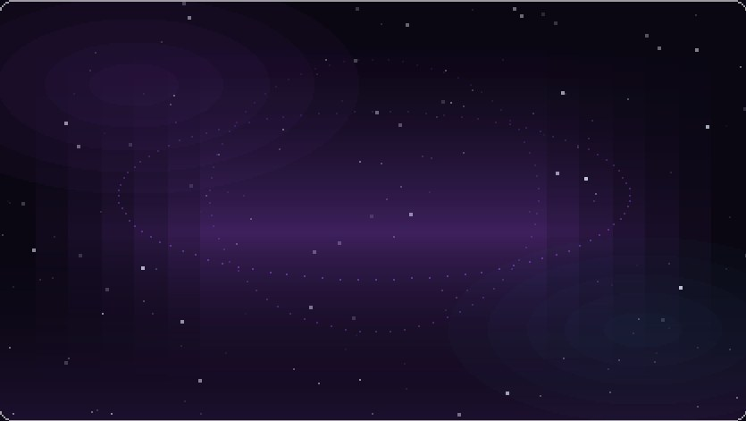
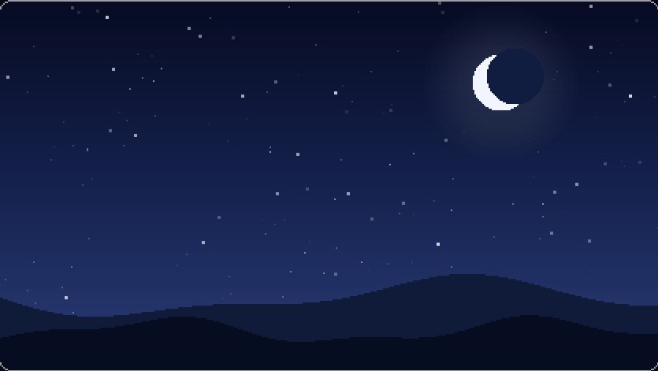
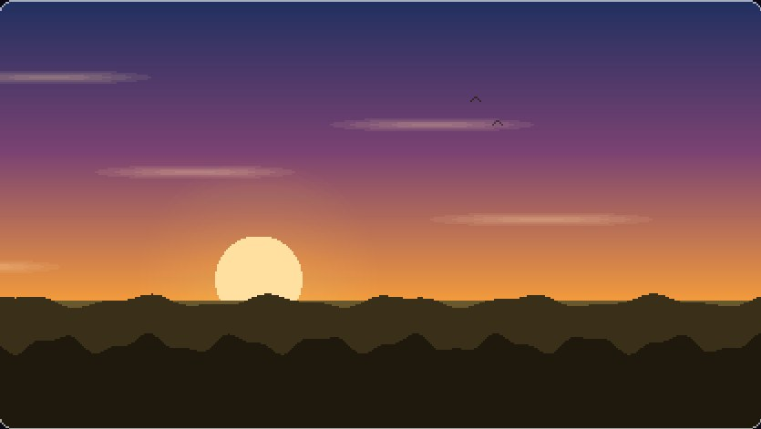
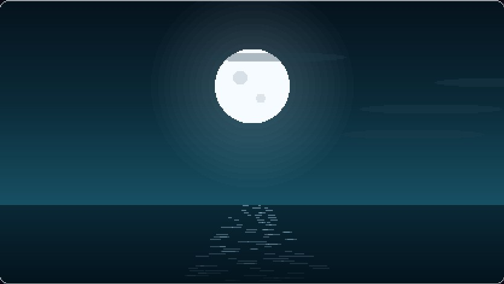
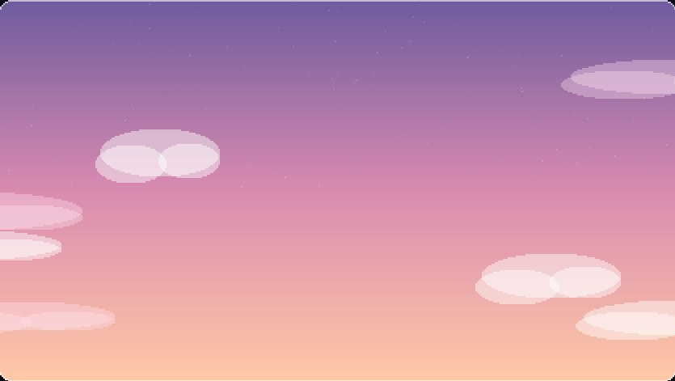
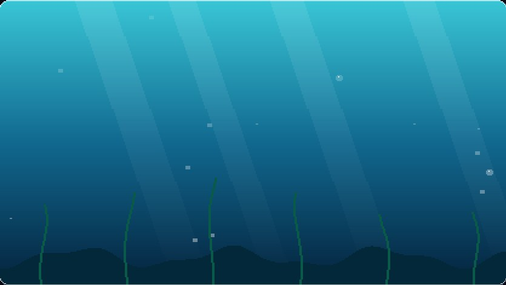
Живой главный экран: обои листаются сами, часы идут по-настоящему. Кадр из игры — ниже.
Всё нарисовано самим модом: ни ресурспаков, ни шейдеров, ни сторонних библиотек.
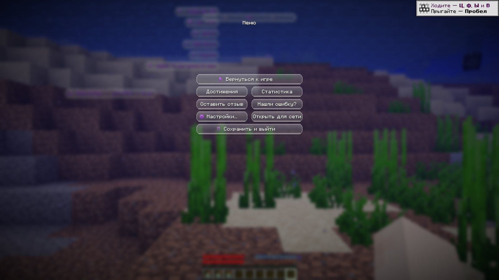
Кнопки, списки, инвентарь, пауза и настройки получают матовое стекло с подсветкой по краю — вместо серых ванильных прямоугольников. Один переключатель на всю игру.
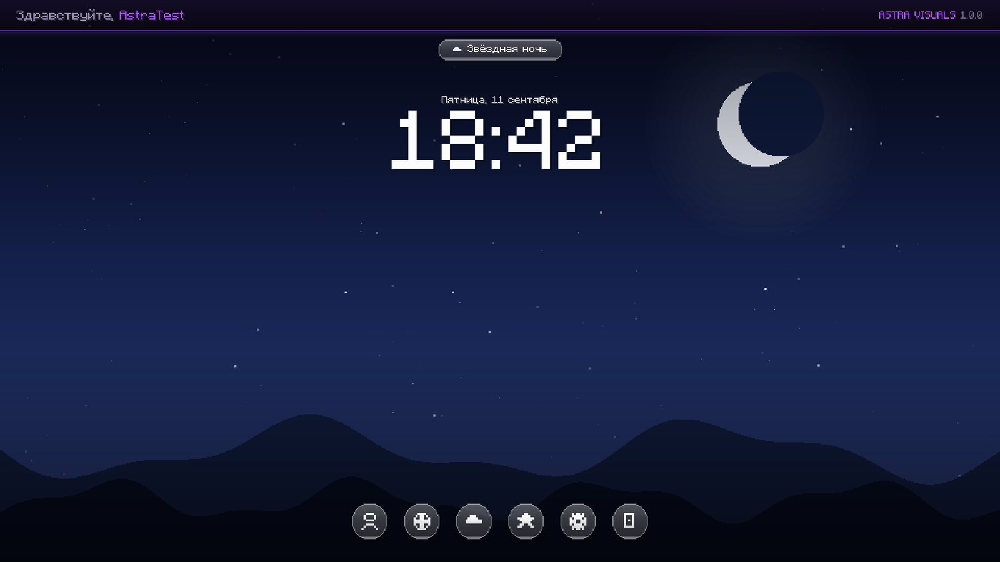
Вместо привычного титульного экрана — большие часы, дата, приветствие по твоему нику и шесть обоев, нарисованных кодом. Кнопки собраны в круглый ряд внизу.
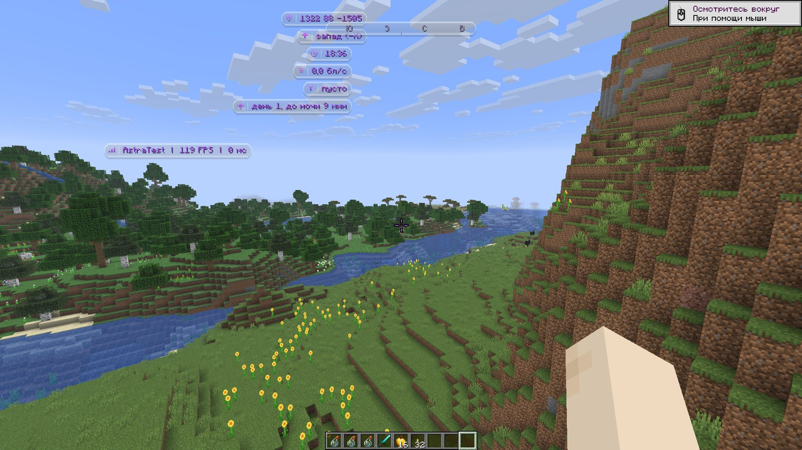
Координаты, компас, часы, скорость, предмет в руке, время до ночи — каждая плашка включается отдельно и перетаскивается в любой угол экрана. Или собирается в одно стекло: столбиком или строкой.
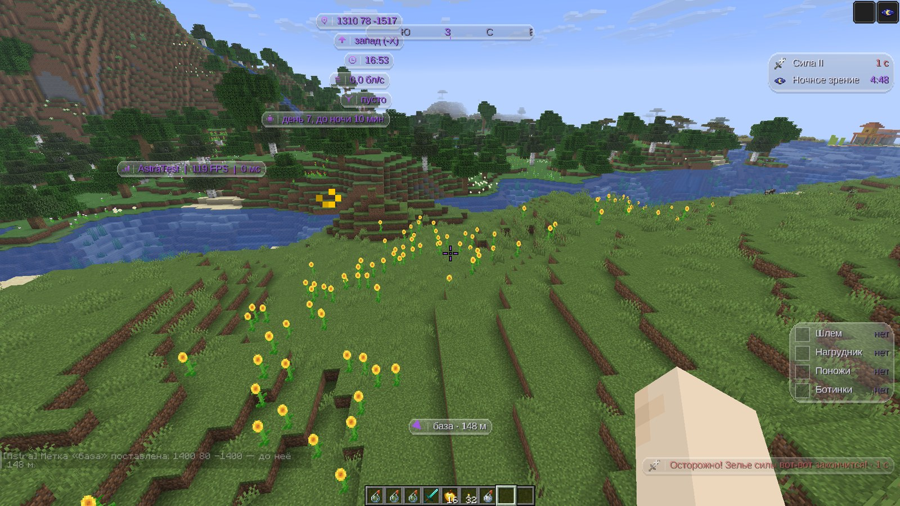
Игра нигде не пишет, сколько осталось эффекту, — число видно только в открытом инвентаре, а в бою его не открывают. Мод говорит об этом словами и заранее: «Осторожно! Зелье силы вот-вот закончится!» — со счётом секунд, звуком и миганием под конец.
.gps 845 72 2338Бой, косметика, свечение, свои на сервере и утилиты на экране. Всё это уже в файле, который лежит ниже, — и всё выключается по отдельности.
Круг на земле показывает, докуда ты реально дотянешься. Считается честно — от глаз до коробки существа, а не от середины к середине.
Под тем, по кому бьёшь, лежит кольцо — и плавает вверх-вниз, чтобы цель не терялась в толпе.
Сколько тотемов осталось, сколько ударов подряд ты нанёс и какого цвета вспыхивает тот, кому больно, — цвет выбираешь сам.
У летящей стрелы видно, чья она. За жемчугом, снежком и стрелой тянется хвост — видно, куда ушёл бросок.
Когда здоровья мало, на экране бьётся сердце — порог и цвет свои.
Собраны из настоящих текселей по развёрткам, а не из тонких линий: плащ со знаком-луной, нимб «свечение» или «искры», спутники — кристаллы, звёзды, луны или кольца.
То, что висит за спиной, прячется по силуэту игрока: спереди видно тебя, а не крылья.
Кто на этом же сервере с модом — у того рядом с ником знак-луна, и его косметика видна. В меню честно написано, что именно уходит наружу.
Обводка или уголки вокруг игроков и существ. Толщина — доля силуэта, поэтому далёкая курица не превращается в цветной прямоугольник.
За идущим тянется высокая полоса. Гаснет по времени, а не по числу шагов, и рисуется одной фигурой, без стыков и полосок.
Светящиеся крупинки вокруг игрока: сколько их, какого цвета и насколько яркие — на ползунках.
Всё, что мод хочет сказать, приезжает сверху одной таблеткой — как на телефоне.
Выкинуло с сервера — мод сам предлагает вернуться, ждёт и считает попытки.
Три ряда инвентаря поверх игры. Предметы рисует сама игра, поэтому чары и прочность настоящие, а панель таскается мышью.
Наводишь на ящик — видишь его настоящую сетку, вещи на своих местах. На каждую вещь внутри можно навести и прочитать чары.
Одна плашка «16 · 0»: скрытое насыщение игра не показывает нигде.
Tab рисует мод: стекло, свой шрифт, знак-луна у своих и ограничение на число строк.
Отдельный экран клавиш: меню, приближение, «поставить метку здесь» и «спрятать всё, что рисует мод».
Выдача предметов и переводы денег просят подтверждения: повтори ту же строку — и она уйдёт. Другая сумма спросит заново.
Меню открывается в мире и на сервере одной клавишей — любой, какую сам назначишь на экране клавиш. И в трёх видах на выбор: обычная панель, кольцо из долек или все разделы колонками. У каждого пункта своя подсказка внизу окна.
Ни одной картинки в файлах мода: небо, луна, облака и лучи под водой рисуются на лету, поэтому весит он 150 килобайт.
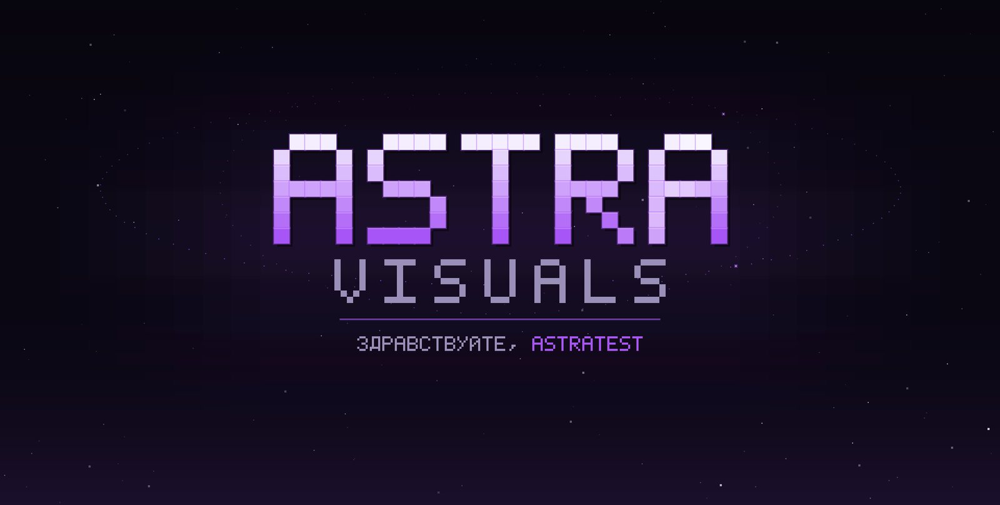
Красный экран Mojang заменён своим: звёздное небо, название, которое собирается из кубиков, и приветствие по нику. Шрифта игры на этом экране ещё нет — буквы нарисованы пиксель за пикселем.
Как поставитьМод целиком открыт: всё, что показано выше, работает без оплаты, ключей и входа. Собран под три версии игры: 1.21.11, 1.21.1 и 1.16.5.
Нужен Minecraft 1.21.11 с загрузчиком Fabric. Больше ничего ставить не надо.
Открой .minecraft\mods и перенеси файл туда. Папки нет — создай её.
Выбери профиль Fabric 1.21.11. В мире нажми правый Shift — откроется меню мода.
Один файл, никакой регистрации. Не понравится — просто убери его из папки модов.